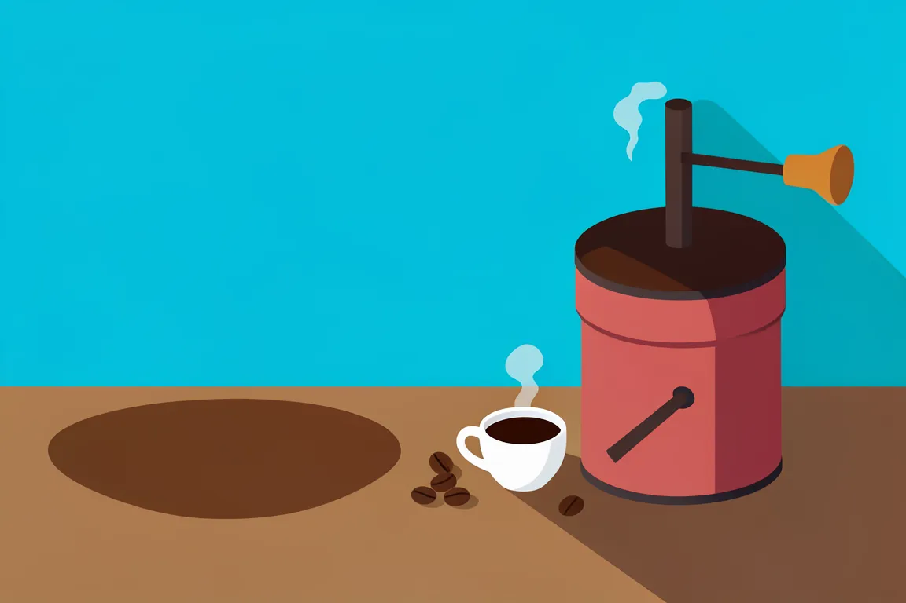

Interfaces of solid colour fields, simple geometric shapes, bold sans-serif type and no gradients or shadows. It followed Microsoft Metro in 2010 and Windows 8 in 2012, and became the default after iOS 7 in 2013.

Core thesis
A digital interface is honest when it shows itself as pixels and type, and does not imitate physical objects.
Design principles
Fill every surface with one solid colour and use no gradient, texture or shadow.
Build the palette from 4 to 6 saturated colours, such as turquoise, emerald, amethyst, carrot and alizarin, plus one neutral.
Draw icons as simple geometric shapes on a 24px or 32px square, with solid fills or a 2px stroke and no bevel.
Express hierarchy with size, weight and colour, using at least a 1.25 ratio between type levels.
Use large tap targets of at least 44px and generous padding of 16 to 24px around content.
Separate regions with a change of colour and not with a border, a shadow or a line.
Give interactive elements a plain colour change on hover and press, with no lift and no glow.
Anti-patterns
Gradients, glossy highlights and reflections on buttons
Drop shadows, inner shadows and bevels on any element
Textures of leather, paper, wood or linen as backgrounds
Photographic or 3D-rendered icons
Low-contrast pastel text under 4.5:1 on a coloured field
Ghost buttons with a 1px outline as the only primary action
Mixed icon styles of outline and filled in one view